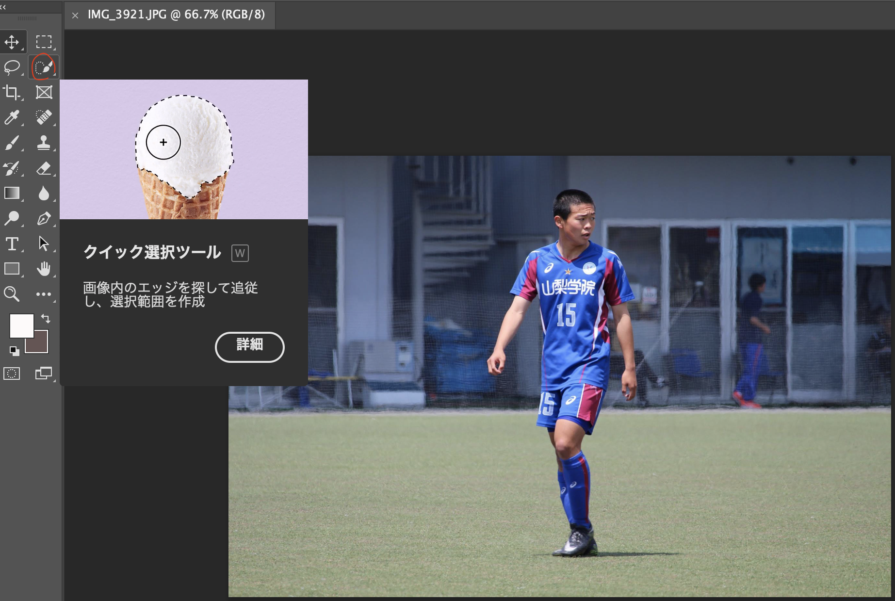

Hello!

・Macbook pro
・illustrater
・photoshop
① イラレ上に任意の画像を配置。
②どこかに図形を作成。
③Shift + クリックで両方を選択。
④オブジェクト→グリッピングマスク→作成を選択。
⑤そうすると、その図形の形に画像が切り抜かれる。
① フォトショップ上に任意の画像を配置し、イメージ→モード→グレースケールを選択。
②そうすると画像が白黒になる。
① フォトショップ上に任意の画像を配置。

②左側のクイック選択ツールを選択。

③一通り自分を選択できたら右上の選択とマスクをクリック。
※筆のサイズを変えたい場合は、Control + Alt。
④左側の境界線調整ツールとブラシツールを使ってさらに細かく選択を行う。
※境界線調整ツール（上）は名前の通り境界を調整してくれる。
※ブラシツール（下）は消えてしまった部分を修復してくれる。
⑤綺麗に選択できたら、右下の出力先を新規レイヤーに変えてOKを選択。
⑤そうしたら切り抜かれているため、ファイル→書き出し→PNGとしてクイック書き出しを選択し保存する。
上記のスキルを用いることで、このような画像を作れるようになります。
もし、良い画像を作りたい時はこの作り方も選択肢の一つに考えてみてください。
Fin.